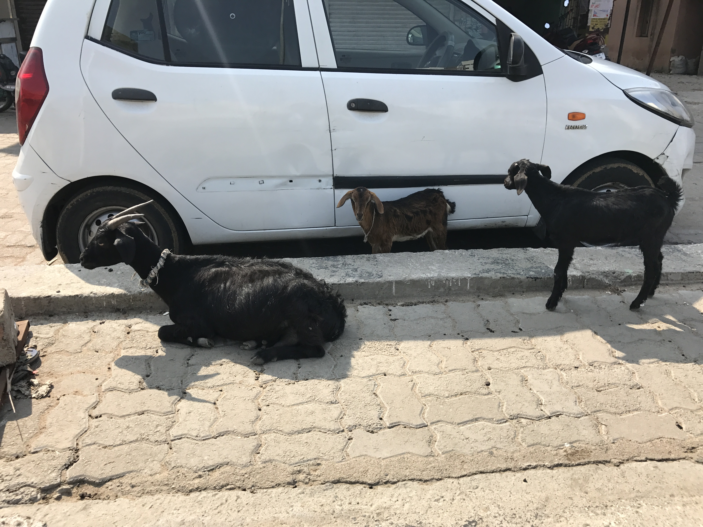
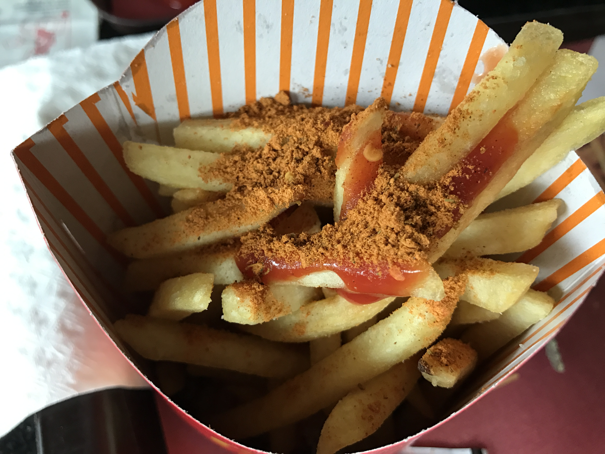

インド（India)～不思議の国～
まだ行ったことのない国もたくさんありますが、これまで行った５０数か国の中では最も衝撃を受けた国はインドです（注：私が知っているインドは２０年以上前のものが多いですが）。 日本は東洋と言っても先進国（西側諸国）の文化がたくさん入ってきてるのですが、彼らの文化は正にインド特有です。まあ人は多いしこういっちゃあなんですが汚い（直近では５年前も行きましたがやっぱり汚い）、まあ普通の日本人なら着いた日から数日は下痢します。 私は３０回行ってますが、最初の１，２日は腹が緩い。 私の場合、仕事柄地方の様々な工場を訪問しているので
デリーやムンバイ以外の街や村も合わせて５０くらい行ったので田舎での衝撃もお話します。
まずは牛ですね、街中どこでもいます。神様ですから大事にされてます。 飼い主とかいるのでしょうか？野良牛なのでしょうか。 そういえばまだインド人に尋ねたことがなかったということに気づきました。他の動物もたくさんいます。とりあえず猿と山羊がいたので写真とってきました。 人と動物と車が入り乱れて街はカオスという表現がピッタリです。 電車の駅は最悪で乞食（というか多分地方から出てきたホームレス）が何百人も駅に住んでます。 物乞いのために手や足を失くしている人もいてビックリしてしまいます。


私はヒンディー語はできないので現地ではなんとか下手な英語で会話してきましたが、インド人（デリーとか北の人ですが）が数人いると会話が英語からいきなりヒンディー語に変わってたりするので困ります。 最初は英語自体アクセントの位置が違うので聞き取れないのですが、慣れてきて「うん、わかる、わかる」って思って聞いていると突然聞き取れなくなり、全く知らない言葉に途中から変わってたりします。主な言語は１２種類くらいですが、細かくは百言語くらいあるそうです。インド人に聞くと地方へ行くとインド人でもタクシー運転手と会話できないそうなのでそういうものかと思うしかないです。私のデリーの友人はコルカタに数年駐在したことがあって、ベンガル語が話せるのが自慢でした。



食事はとにかくカレー。 どれもほぼカレー味。最初はおいしいですが、3日で飽きてきます。 基本辛い。牛は神様なので食べません。豚も食べません。なので肉は鶏か羊です。 パン（ナーン）とご飯は手で食べるのですが、左手は不浄の手ということで右手だけで食べます。 ナーンは右手だけでちぎって食べます。外国人にはほぼ無理です。 南へ行くとナーンよりご飯が主食になるのですが、これも基本手で食べます。 ある国営の立派な工場の食堂でランチを食べましたが、フォークもスプーンも（もちろん箸も）なく、驚いていると皆さん右手だけで食べてました。 私は翌日からはホテルのスプーン・フォーク持参で通いましたが。 こう書いていると私がインド料理を嫌いなのかと思われそうですが、本当は大好きです。 ただ毎日食べるのは飽きるだろうなってことです。 軽い食事やランチにはドーサ（クレープみたいの）やビリヤーニ（炊き込みご飯）という料理もあって美味しいです。ちなみにマックのポテトには”ピリピリスパイス”がついてます。
インド人の半分はベジタリアンだそうで、実際私がこれまで会った人たち（１００人以上）の半分くらいはそうでした。 不思議なのはベジタリアンって全然痩せてないんですよね。 というより私が今まで会ったことのあるインド人の９割以上は太ってました。 インド料理ってやっぱり脂っぽいんでしょうか。 あと、昔は奥さんが太っているほうがえらいみたいなことが言われていたようです。